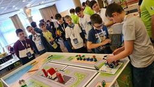

Töviscsapat Roboking
{{Regionális}} 7. {{hely}} {{Összesített}} 81 {{pont}}, 156 sec
Team Boros András Benedek, Bodnár Benedek, Földvárszki Alfonz
Coach Faragó Attila
{{Regionális}} 7. {{hely}} {{Összesített}} 81 {{pont}}, 156 sec
Team Boros András Benedek, Bodnár Benedek, Földvárszki Alfonz
Coach Faragó Attila
